Colour tokens
#021D39ITA Navy. The 'I' and IMPACT wordmark colour; the dominant ground on thumbnails, title cards, end screens and banners. White, Sky and Orange all pass contrast on it.
#0B2E52Raised navy. Placeholder boxes on end screens, panels sitting on navy-900.
#EE5D1AITA Orange (the 'T'). Headline second line, the diagonal slab, episode numbers. On navy it passes for all text sizes (4.7:1). On white use only at 24px+ (3.6:1); for smaller orange text on white use orange-600.
#C4470DAccessible orange for small text and links on white grounds (5.2:1).
#86B7D7ITA Sky (the 'A' and TECHNICAL ADVISORS). Eyebrow labels, tags, the case-study slab. Navy text on sky passes (7.9:1); white on sky does not, never use it.
#EAF2F8Ice. Light-theme raised surfaces in decks and documents.
#FFFFFFHeadline first line on navy; the logo pill and question pill fill.
#FFFFFFPage / slide ground.
#46607CSecondary text, captions, eyebrows on surface.
#D3E2EEHairlines and dividers.
Assets
Click any image to download the full-size file.
Logos

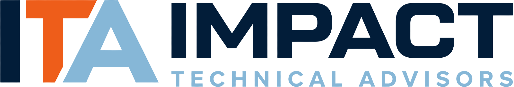


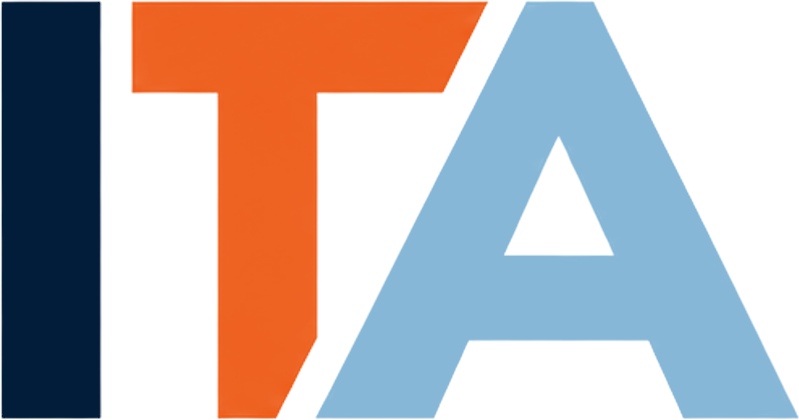

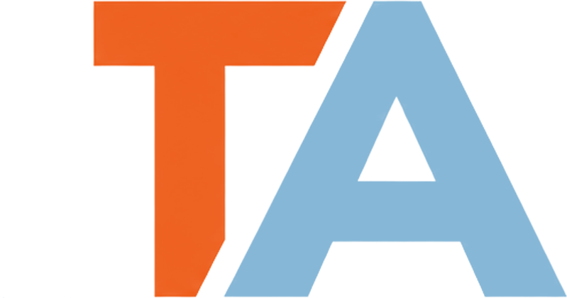


YouTube Channel

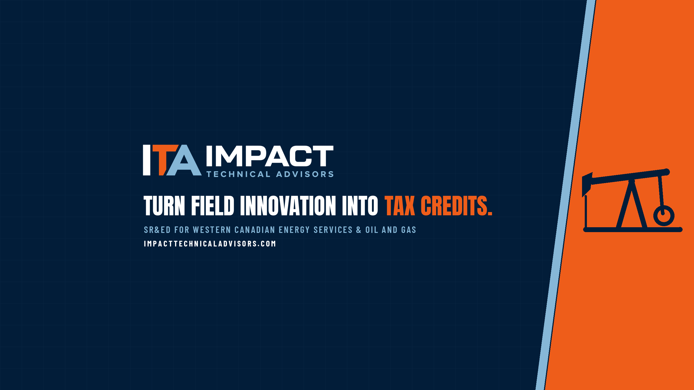

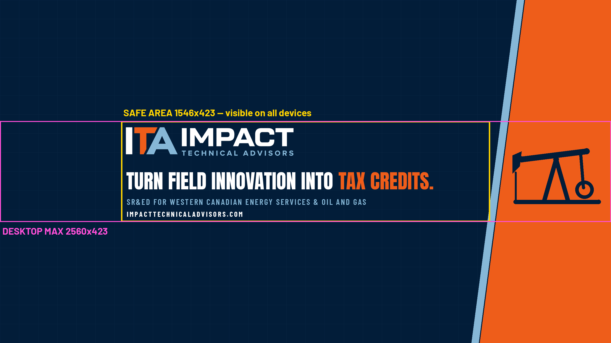


Thumbnails

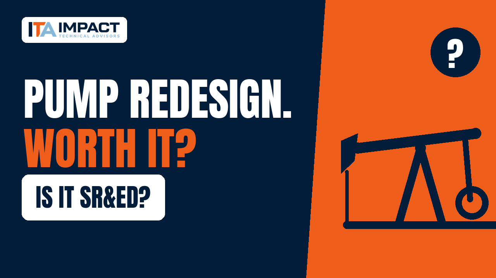


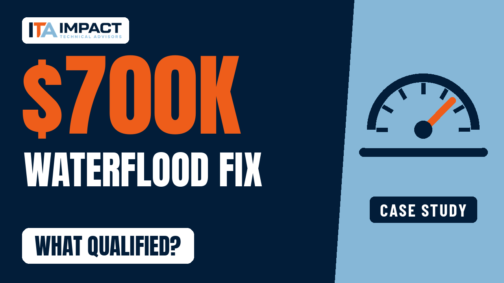


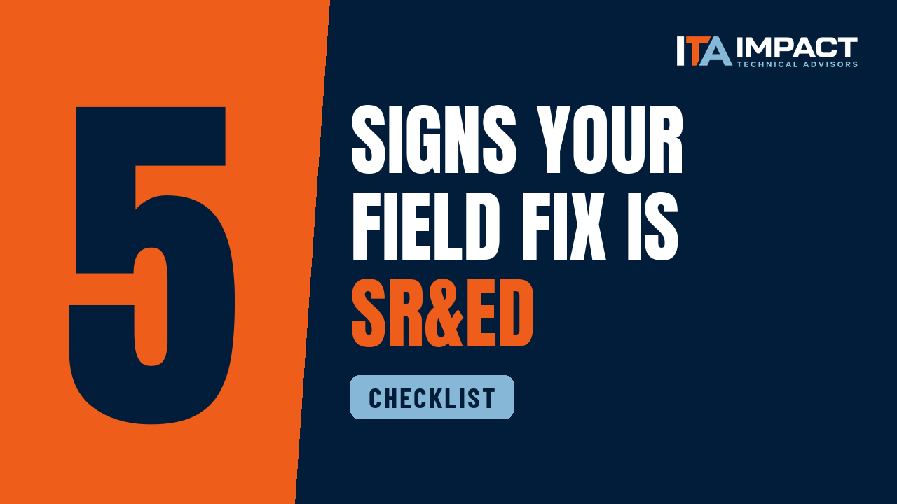

Video Graphics

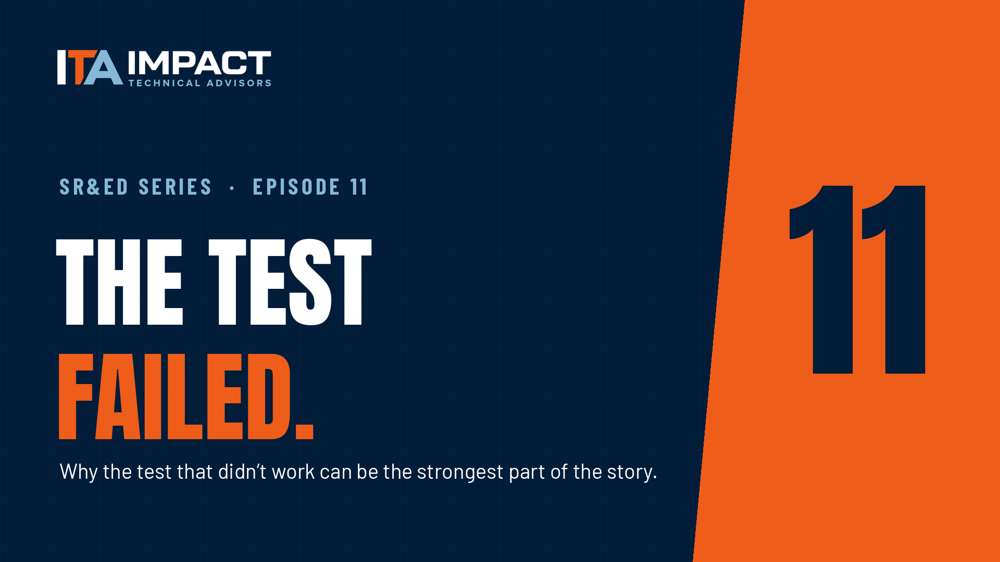


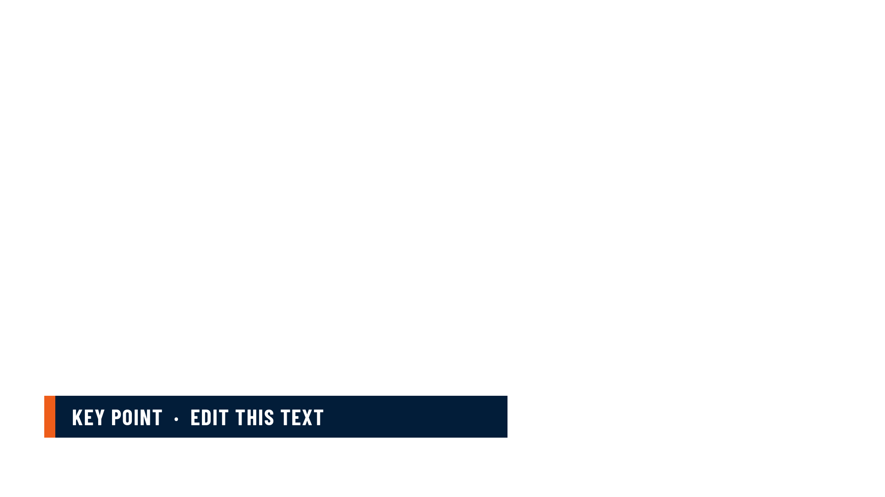

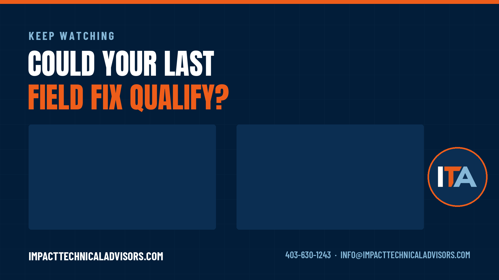

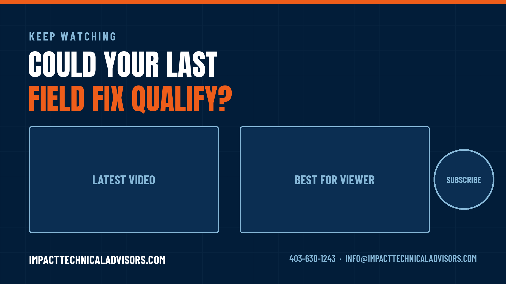

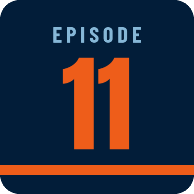
Playlist Covers

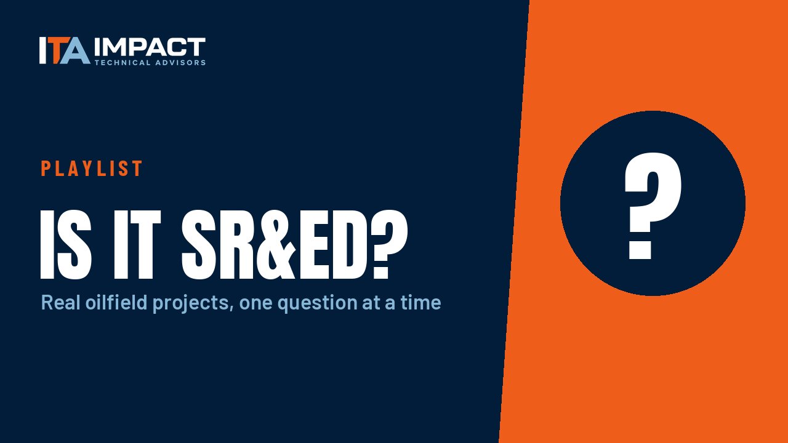

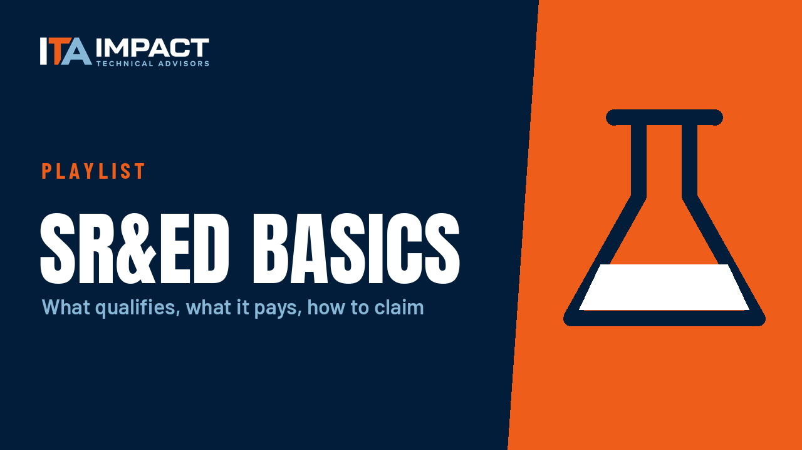

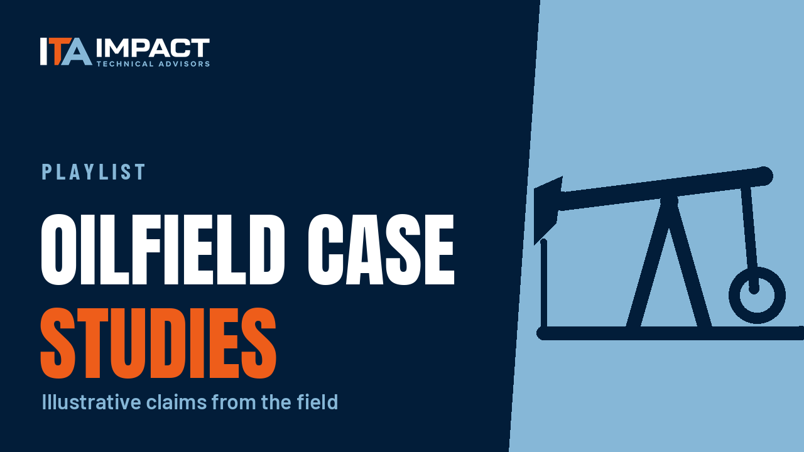

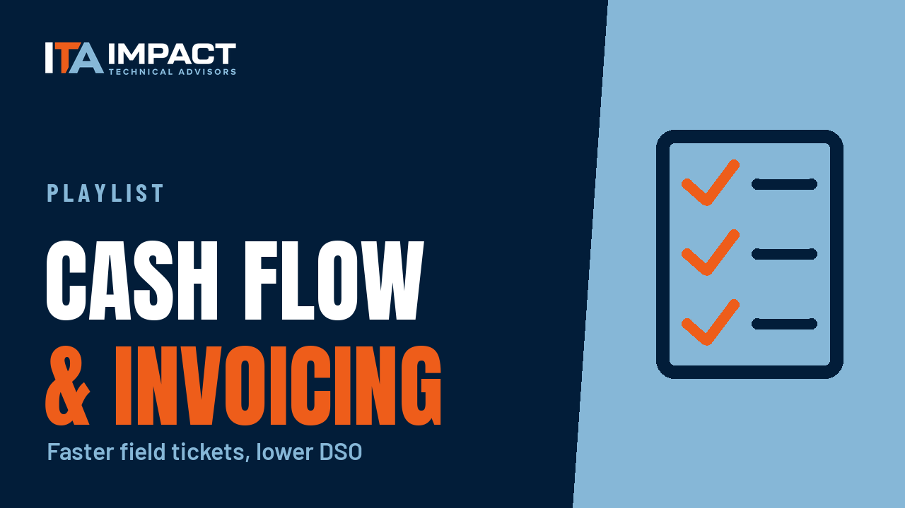

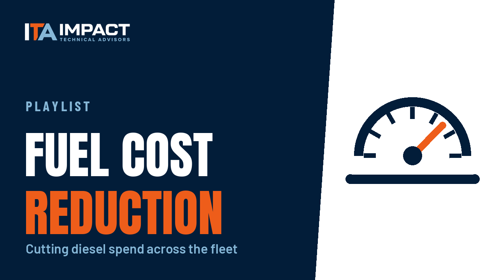
Social

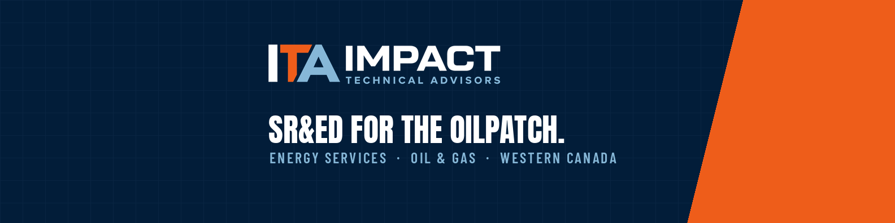